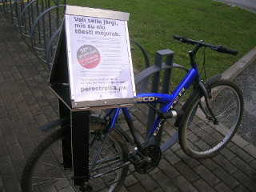
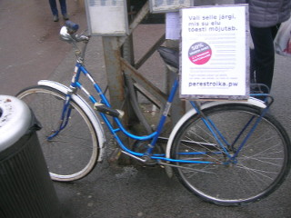
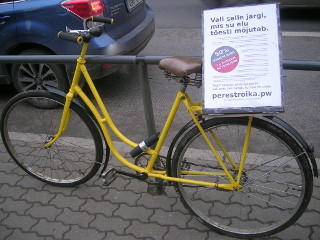
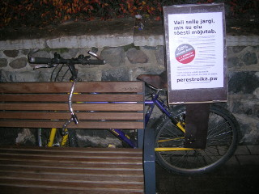

Ehk siis, häbematu reklaam. See, mis ei meeldi, aga mida peab poliitikas osalemiseks tegema. Palun ärge kaotage meie reklaami tarbimisel ja levitamisel mõõdutunnet. Perestroika on nähtus, mille käima ajamisega läheb kindlasti tükk aega.
Lendleht valija teadlikkuse tõstmiseks päris teemadest. Sisaldab rohkem tooreid ja karme arvusid, kui ühegi muu poliitilise jõu trükis. :) Olemuselt on tegu metapropaganda lehe versiooniga inimestele, kes viitsivad rohkem lugeda. Kui loete juhtumisi lendlehe versiooni, mis ütleb Himaalaja liustike kahanemise protsendiks 30%, siis tegemist on trükiveaga, seal peab olema 15%. Neid vigaseid on meil linna peal paar tükki laiali ja esialgu ei tea keegi, kus täpselt.
Võib-olla peaksime panema poliitilisse programmi kirja ka selle, et ühiskonnas on avalik ruum ülereguleeritud ja -kommertsialiseeritud. Vabas kasutuses olevaid reklaamipindu teame Tallinnas ainult kahte, üks kuulub Kassisaba seltsile ja teine on Gustav Adolfi Gümnaasiumi kõrval. Veidi vähe? :)
Kümme aastat tagasi, viimaste suurte anarhistlike kampaaniate ajal, laekus kampaaniate tegijatele palju negatiivseid arvamusi ja juriidilisi hoiatusi, kuna reklaami tehti graffiti kujul, ning pabereid liimiti kinni. See küll mõjub, aga proovime seekord kavalamad olla?
Linnas on väga palju metallist pindu, mille külge hakkab pisikene magnet, milliseid saab (eelistatult mitte Hiinast) hinnaga paar senti tükk. :) Kui te panete oma sildi viisil, mis pinda ei kahjusta, on väiksem võimalus, et keskid mõurama tulevad. :)
Osad meist on valinud mainstream-reklaami tee, ning tellivad 1.2 x 1.8 meetri suuruseid reklaame bussipeatustele ja "linnasammastele". See küll mõjub, aga see on päris kallis. Seetõttu on keskid meist valinud ka teise tee:
Me ju kõik mäletame Keskerakonda ja kohukest? Seekord on meil pakkuda paremat: kohutav ohuke! :) Sebige omale 15 euroga vana jalgratas, mil on pakiraam (mõned tehnikahuvilised on ka ise teinud, vaadake esimest pilti). Ostke veekindlat vineeri (Vineerimaailma 9 mm paksused jäägid näiteks), mida oskate kas käsisae, tikksae või koguni relaka ja teemantkettaga lõigata (viimasel juhul vajate tolmumaski, kaitseprille, kõrvaklappe ja ettevaatust). Akutrell või aku-kruvikeeraja ning Torx otsikud tulevad kasuks.
Ostke Espakist neli 32 sendilist hinge (3x2 auku, asuvad kruviletis), hästi lühikesi Torx otsaga kruvisid (3.5 x 12 mm), lõigake A3 lehtede jaoks ca. 44 x 32 cm laiused vineerid, põhjaks lõigake umbes 37 cm x 32 cm vineer, kruvige need kokku nõnda, et saab moodustada kolmnurga. Kolmnurga tipp ühendage pikemate (3.5 x 25 mm) Torx kruvidega. Aluspõhja sisse puurige ca. 9 mm diameetriga auke ratta pakiraami vajaduste järgi (ca. 4 rida auke 5 cm vahega).
Ostke pihustatavat Moment liimi (Espaki värviosakonnas, kiire aga kallis, 13 euri maksab) ja tugevaid (7 mm) kaablikrõpse. Laske trükkida ja lamineerida A3 plakat, lõppmontaaž tehke õues, sest liim pritsib, määrib ja aurab. Alternatiiv liimile võiks olla silikoon. Kandes kummikindaid, pihustage plakati tagakülg liimiga üle. Pihustage stendi külg kah liimiga üle, asetage plakat stendile. Siluge. Kinnitage stend kaablikrõpsudega pakiraamile. (Vähemalt 6 krõpsu, 70 kg kandevõimega krõpsud sobivad.) Sebige tugev rattalukk ja parkige oma ratas käidavasse kohta.
Kõik on JOKK, teil on õigus seda teha, ning kohutav ohuke ongi riigikorda kõigutamas! :) All on näited ohukestest, mis meie inimesed tekitanud on. :)
   
Te ju ei trüki kodus Eurosize (1.2 x 1.8 m) plakateid? No vot, sellepärast korjasime selle siit ära. Kui tagasi tahate, andke palun märku. :)